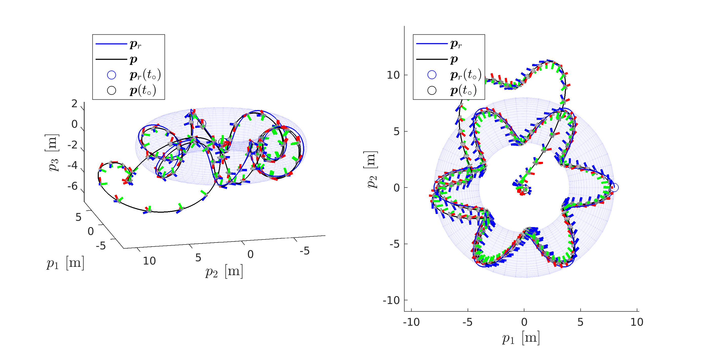
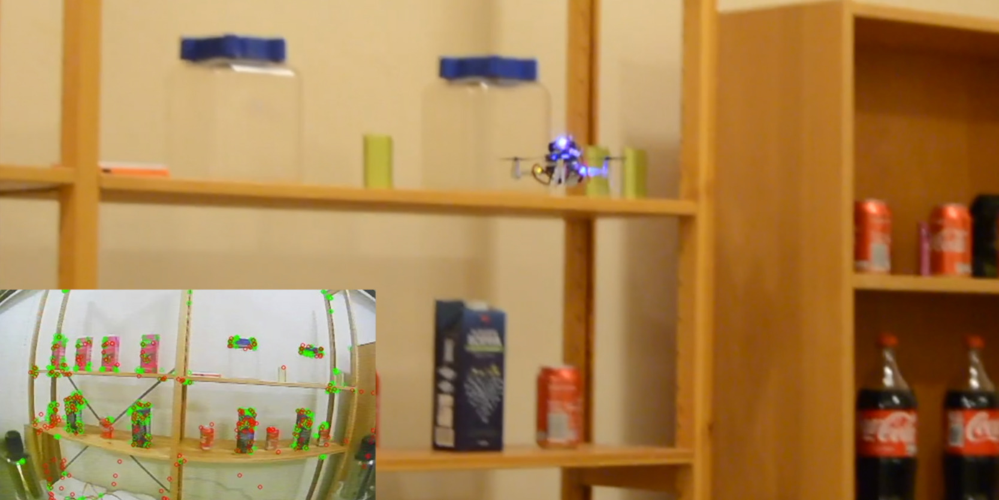
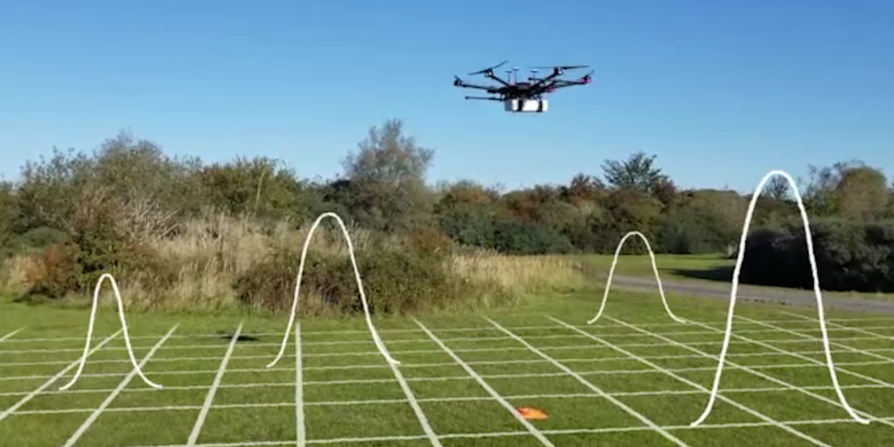

Systems With an Attitude
In this thesis, Lyapunov methods and cascade results are used to derive novel filtered output feedback controllers that provide almost global uniform stability properties when considering tracking and estimation errors jointly.

Supermarket Inventorying
In this paper, a nonlinear full-state feedback controller is derived on SU(2)xR3 and integrated with a SLAM system, facilitating the inventorying of supermarkets by a small Crazyflie 2.0 without external positioning systems.

Radiation Mapping
In this work, we revisit existing algorithms for the mapping of radiation intensity by UAVs. The algorithms are extended to handle continuous intensity statistics and subsequently demonstrated in practice with a surveying application.